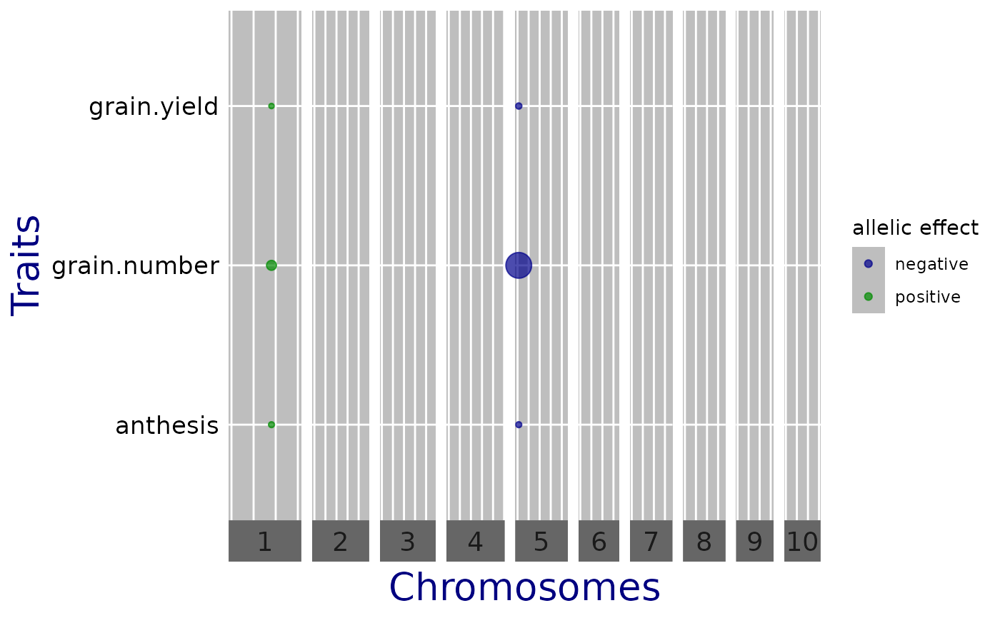

Perform multi-trait GWAS
runMultiTraitGwas.RdrunMultiTraitGwas performs multi-trait or multi-environment Genome
Wide Association mapping on phenotypic and genotypic data contained in a
gData object.
Usage
runMultiTraitGwas(
gData,
trials = NULL,
traits = NULL,
covar = NULL,
snpCov = NULL,
kin = NULL,
kinshipMethod = c("astle", "IBS", "vanRaden", "identity"),
GLSMethod = c("single", "multi"),
estCom = FALSE,
useMAF = TRUE,
MAF = 0.01,
MAC = 10,
genomicControl = FALSE,
fitVarComp = TRUE,
covModel = c("unst", "pw", "fa"),
VeDiag = TRUE,
maxIter = 2e+05,
mG = 1,
mE = 1,
Vg = NULL,
Ve = NULL,
thrType = c("bonf", "fixed", "small", "fdr"),
alpha = 0.05,
LODThr = 4,
nSnpLOD = 10,
pThr = 0.05,
rho = 0.4,
sizeInclRegion = 0,
minR2 = 0.5,
parallel = FALSE,
nCores = NULL
)Arguments
- gData
An object of class
gDatacontaining at leastmap,markersandpheno. The latter should not contain missing values. Multi-trait or multi-environment GWAS is performed for all variables inpheno.- trials
A vector specifying the environment on which to run GWAS. This can be either a numeric index or a character name of a list item in
pheno.- traits
A vector of traits on which to run GWAS. These can be either numeric indices or character names of columns in
pheno. IfNULL, GWAS is run on all traits.- covar
An optional vector of covariates taken into account when running GWAS. These can be either numeric indices or character names of columns in
covaringData. IfNULL, no covariates are used. An intercept is included automatically (and should not be assigned as covariate). SNP-covariates should be assigned using the snpCov parameter.- snpCov
An optional character vector of SNP-names to be included as covariates. SNP-names should match those used in
gData.- kin
An optional kinship matrix or list of kinship matrices. These matrices can be from the
matrixclass as defined in the base package or from thedsyMatrixclass, the class of symmetric matrices in the Matrix package.
IfGLSMethod= "single" then one matrix should be provided, ifGLSMethod= "multi", a list of chromosome specific matrices of length equal to the number of chromosomes inmapingData.
IfNULLthen matrixkinshipingDatais used.
If bothkinis provided andgDatacontains a matrixkinshipthenkinis used.- kinshipMethod
An optional character indicating the method used for calculating the kinship matrix(ces). Currently "astle" (Astle and Balding, 2009), "IBS", "vanRaden" (VanRaden, 2008), and "identity" are supported. If a kinship matrix is supplied either in
gDataor in parameterkin,kinshipMethodis ignored.- GLSMethod
A character string indicating the method used to estimate the marker effects. Either
singlefor using a single kinship matrix, ormultifor using chromosome specific kinship matrices.- estCom
Should the common SNP-effect model be fitted? If
TRUEnot only the SNP-effects but also the common SNP-effect and QTL x E effect are estimated.- useMAF
Should the minor allele frequency be used for selecting SNPs for the analysis. If
FALSE, the minor allele count is used instead.- MAF
The minor allele frequency (MAF) threshold used in GWAS. A numerical value between 0 and 1. SNPs with MAF below this value are not taken into account in the analysis, i.e. p-values and effect sizes are put to missing (
NA). Ignored ifuseMAFisFALSE.- MAC
A numerical value. SNPs with minor allele count below this value are not taken into account for the analysis, i.e. p-values and effect sizes are set to missing (
NA). Ignored ifuseMAFisTRUE.- genomicControl
Should genomic control correction as in Devlin and Roeder (1999) be applied?
- fitVarComp
Should the variance components be fitted? If
FALSE, they should be supplied inVgandVe.- covModel
A character string indicating the covariance model for the genetic background (Vg) and residual effects (Ve); see details. Either
unstfor unstructured for both Vg and Ve (as in Zhou and Stephens (2014)),pwfor unstructered for both Vg and Ve (pairwise, as in Furlotte and Eskin (2013)) orfafor factor-analytic for both Vg and Ve.
Ignored iffitVarComp=FALSE- VeDiag
Should there be environmental correlations if covModel = "unst" or "pw"? If traits are measured on the same individuals, put
TRUE.- maxIter
An integer for the maximum number of iterations. Only used when
covModel = "fa".- mG
An integer. The order of the genetic part of the factor analytic model. Only used when
covModel = "fa".- mE
An integer. The order of the environmental part of the factor analytic model. Only used when
covModel = "fa".- Vg
An optional matrix with genotypic variance components.
Vgshould have row and column names corresponding to the column names ofgData$pheno. It may contain additional rows and columns which will be ignored. Ignored if fitVarComp =TRUE.- Ve
An optional matrix with environmental variance components.
Veshould have row names column names corresponding to the column names ofgData$pheno. It may contain additional rows and columns which will be ignored. Ignored if fitVarComp =TRUE.- thrType
A character string indicating the type of threshold used for the selection of candidate loci. Either
bonffor using the Bonferroni threshold, a LOD-threshold of \(-log10(alpha/p)\), where p is the number of markers and alpha can be specified inalpha,fixedfor a self-chosen fixed LOD-threshold, specified inLODThrorsmall, the LOD-threshold is chosen such as the SNPs with thenSnpLODsmallest p-values are selected.nSnpLODcan be specified.- alpha
A numerical value used for calculating the LOD-threshold for
thrType= "bonf" and the significant p-Values forthrType= "fdr".- LODThr
A numerical value used as a LOD-threshold when
thrType= "fixed".- nSnpLOD
A numerical value indicating the number of SNPs with the smallest p-values that are selected when
thrType= "small".- pThr
A numerical value just as the cut off value for p-Values for
thrType= "fdr".- rho
A numerical value used a the minimum value for SNPs to be considered correlated when using
thrType= "fdr".- sizeInclRegion
An integer. Should the results for SNPs close to significant SNPs be included? If so, the size of the region in centimorgan or base pairs. Otherwise 0.
- minR2
A numerical value between 0 and 1. Restricts the SNPs included in the region close to significant SNPs to only those SNPs that are in sufficient Linkage Disequilibrium (LD) with the significant snp, where LD is measured in terms of \(R^2\). If for example
sizeInclRegion= 200000 andminR2= 0.5, then for every significant SNP also those SNPs whose LD (\(R^2\)) with the significant SNP is at least 0.5 AND which are at most 200000 away from this significant snp are included. Ignored ifsizeInclRegion= 0.- parallel
Should the computation of variance components be done in parallel? Only used if
covModel = "pw". A parallel computing environment has to be setup by the user.- nCores
A numerical value indicating the number of cores to be used by the parallel part of the algorithm. If
NULLthe number of cores used will be equal to the number of cores available on the machine - 1.
Details
runMultiTraitGwas estimates the effect of a SNP in different trials or on different traits, one SNP at a time. Genetic and residual covariances are fitted only once, for a model without SNPs. Following the diagonalization scheme of Zhou and Stephens (2014), the following model is fit
\(Y = \left(\begin{array}{c} Y_1 \\ \vdots \\ Y_p\end{array}\right) = \left(\begin{array}{c} X_1\gamma_1 \\ \vdots \\ X_p\gamma_p\end{array}\right) + \left(\begin{array}{c} x_1\beta_1 \\ \vdots \\ x_p\beta_p\end{array}\right) + \left(\begin{array}{c} G_1 \\ \vdots \\ G_p\end{array}\right) + \left(\begin{array}{c} E_1 \\ \vdots \\ E_p\end{array}\right)\)
where \(Y\) is a \(np \times 1\) vector of phenotypic values for \(n\) genotypes and \(p\) traits or trials. \(x\) is the \(n \times 1\) vector of scores for the marker under consideration, and \(X\) the \(n \times q\) design matrix for the other covariates. By default only a trait (environment) specific intercept is included. The vector of genetic background effects (\(\left(\begin{array}{c}G_1 \\ \vdots \\ G_p\end{array}\right)\)) is Gaussian with zero mean and covariance \(V_g \otimes K\), where \(V_g\) is a \(p \times p\) matrix of genetic (co)variances, and \(K\) an \(n \times n\) kinship matrix. Similarly, the residual errors (\(\left(\begin{array}{c}E_1 \\ \vdots \\ E_p\end{array}\right)\)) have covariance \(V_e \otimes I_n\), for a \(p \times p\) matrix \(V_e\) of residual (co)variances.
Hypotheses for the SNP-effects
For each SNP, the null-hypothesis \(\beta_1 = \dots = \beta_p = 0\) is
tested, using the likelihood ratio test (LRT) described in Zhou and
Stephens (2014). If estCom = TRUE, additional tests for a common
effect and for QTL x E are performed, using the parameterization
\(\beta_j = \alpha + \alpha_j (1 \leq j \leq p)\).
As in Korte et al (2012), we use likelihood ratio tests, but not restricted
to the bivariate case. For the common effect, we fit the reduced
model \(\beta_j = \alpha\), and test if \(\alpha = 0\).
For QTL-by-environment interaction, we test if \(\alpha_1 = \dots =
\alpha_p = 0\).
Models for the genetic and residual covariance
\(V_g\) and \(V_e\) can be provided by the user
(fitVarComp = FALSE);
otherwise one of the following models is used, depending on covModel.
If covModel = "unst", an unstructured model is assumed, as in Zhou and
Stephens (2014): \(V_g\) and \(V_e\) can be any positive-definite matrix,
requiring a total of \(p(p + 1)/2\) parameters per matrix.
If covModel = "fa", a factor-analytic model is fitted using an
EM-algorithm, as in Millet et al (2016). \(V_g\) and \(V_e\) are assumed
to be of the form \(W W^t + D\), where \(W\) is a \(p \times m\) matrix
of factor loadings and \(D\) a diagonal matrix with trait or environment
specific values. \(m\) is the order of the model, and the parameters
mG and mE specify the order used for respectively \(V_g\)
and \(V_e\). maxIter sets the maximum number of iterations used
in the EM-algorithm.
Finally, if covModel = "pw", \(V_g\) and \(V_e\) are estimated
'pairwise', as in Furlotte and Eskin (2015). Looping over pairs of traits
or trials \(1 \leq j < k \leq p\),
\(V_g[j,k] = V_g[k,j]\) and \(V_e[j,k] = V_e[k,j]\)
are estimated assuming a bivariate mixed model. The diagonals of
\(V_g\) and \(V_e\) are fitted assuming univariate mixed models. If the
resulting \(V_g\) or \(V_e\) is not positive-definite, they are
replaced by the nearest positive-definite matrix.
In case covModel = "unst" or "pw" it is possible to assume
that \(V_e\) is diagonal (VeDiag = TRUE)
References
Dahl et al. (2013). Network inference in matrix-variate Gaussian models with non-independent noise. arXiv preprint arXiv:1312.1622.
Furlotte, N.A. and Eskin, E. (2015). Efficient multiple-trait association and estimation of genetic correlation using the matrix-variate linear mixed model. Genetics, May 2015, Vol.200-1, p. 59-68.
Korte et al. (2012). A mixed-model approach for genome-wide association studies of correlated traits in structured populations. Nature Genetics, 44(9), 1066–1071. doi:10.1038/ng.2376
Millet et al. (2016). Genome-wide analysis of yield in Europe: allelic effects as functions of drought and heat scenarios. Plant Physiology, pp.00621.2016. doi:10.1104/pp.16.00621
Thoen et al. (2016). Genetic architecture of plant stress resistance: multi-trait genome-wide association mapping. New Phytologist, 213(3), 1346–1362. doi:10.1111/nph.14220
Zhou, X. and Stephens, M. (2014). Efficient multivariate linear mixed model algorithms for genome-wide association studies. Nature Methods, February 2014, Vol. 11, p. 407–409.
Examples
## First create a gData object.
## See the vignette for a detailed description.
## Here we use the gData object included in the package
## Run multi-trait GWAS
## Use a factor analytic model to estimate variance components.
# \donttest{
mtg0 <- runMultiTraitGwas(gDataDropsRestr,
trial = "Mur13W",
covModel = "fa")
# }
## Plot the results.
## For details on the different plots see plot.GWAS
# \donttest{
plot(mtg0, plotType = "qq")
plot(mtg0, plotType = "manhattan")
plot(mtg0, plotType = "qtl", yThr = 3.5)

# }
## Run multi-trait GWAS
## Use a pairwise model to estimate variance components.
## Estimate common effects and set a fixed threshold for significant SNPs
# \donttest{
mtg1 <- runMultiTraitGwas(gDataDropsRestr,
trial = "Mur13W",
covModel = "pw",
estCom = TRUE,
thrType = "fixed",
LODThr = 3)
#> Version out of date. Please update sommer to the newest version using:
#> install.packages('sommer') in a new session
#> Use the 'dateWarning' argument to disable the warning message.Version out of date. Please update sommer to the newest version using:
#> install.packages('sommer') in a new session
#> Use the 'dateWarning' argument to disable the warning message.Version out of date. Please update sommer to the newest version using:
#> install.packages('sommer') in a new session
#> Use the 'dateWarning' argument to disable the warning message.
#> Loading required package: Matrix
#> Loading required package: MASS
#> Loading required package: lattice
#> Loading required package: crayon
# }
## Run multi-trait GWAS
## Use an unstructured model to estimate variance components.
## Identify the 5 SNPs with smallest p-values as significant SNPs.
## Compute the kinship matrix using the vanRaden method.
# \donttest{
mtg2 <- runMultiTraitGwas(gDataDropsRestr,
trial = "Mur13W",
kinshipMethod = "vanRaden",
covModel = "unst",
thrType = "small",
nSnpLOD = 5)
#> Version out of date. Please update sommer to the newest version using:
#> install.packages('sommer') in a new session
#> Use the 'dateWarning' argument to disable the warning message.Version out of date. Please update sommer to the newest version using:
#> install.packages('sommer') in a new session
#> Use the 'dateWarning' argument to disable the warning message.Version out of date. Please update sommer to the newest version using:
#> install.packages('sommer') in a new session
#> Use the 'dateWarning' argument to disable the warning message.
# }